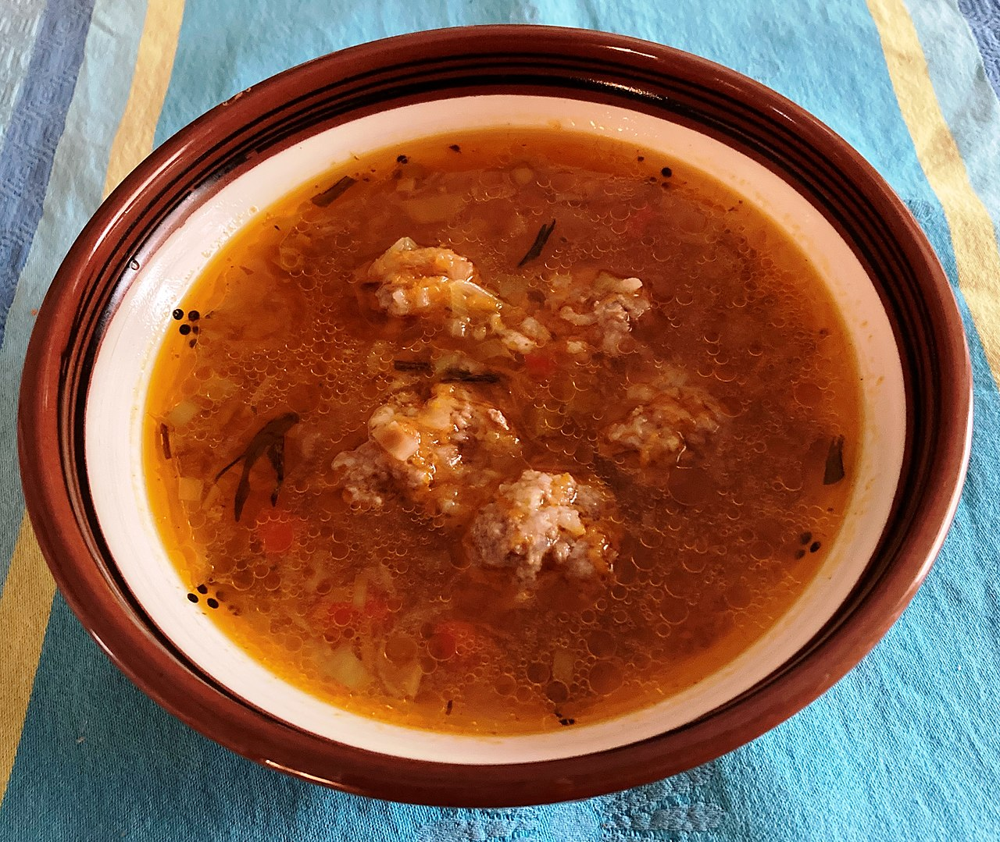

Ciorba Recipe

Description
This is a traditional Romanian soup recipe.
Ingrediente
- 500g carne de vită sau pui
- 2 morcovi, tăiați cubulețe
- 1 ceapă, tocată
- 1 ardei gras, tăiat cubulețe
- 2 roșii, tocate
- 1 țelină, tăiată cubulețe
- 1 păstârnac, tăiat cubulețe
- 1 cartof, tăiat cubulețe
- 1/2 cană orez
- 1 legătură pătrunjel, tocat
- 1 legătură leuștean, tocat
- 2 litri apă sau supă de vită/pui
- Sare și piper după gust
- 1 cană smântână (opțional)
- 2-3 linguri oțet sau suc de lămâie (pentru acrire)
Steps
- Curățați și tăiați cartofii în bucăți.
- Fierbeți cartofii în apă sărată până devin fragezi, aproximativ 15-20 de minute.
- Scurgeți cartofii și puneți-i înapoi în oală.
- Adăugați untul și laptele în oală.
- Pasați cartofii până devin netezi și cremoși.
- Asezonați cu sare după gust și serviți fierbinte.
BAck Home